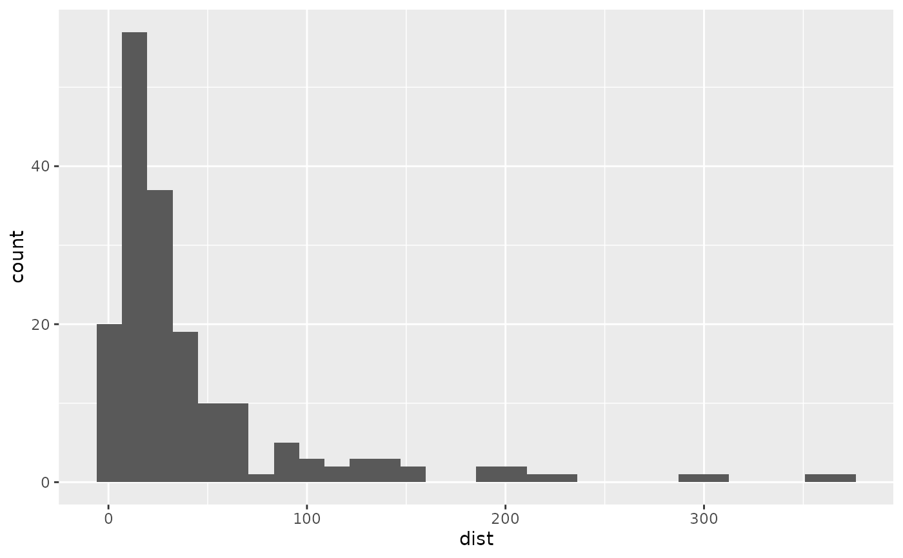

Create the necessary files to allow interactive viewing of SVG
ViewSVG.RdCopy files from the package folders to the current working directory and write a markdown file that contains the links to all accessible SVG files in the current directory.
Details
This will create a html file that has a list of the available svg in the current directory. This only supports the current working directory at the moment. However this is planned on changing in the future. To make the files you can use the MakeAccessibleSVG() function
References
Godfrey, A.J.R. (2013) ‘Statistical Software from a Blind Person's Perspective: R is the Best, but we can make it better’, The R Journal 5(1), pp73-79.
Examples
library(ggplot2)
# Make a few svg webpages
tsplot = TimeSeriesPlot(airquality, x=airquality$Temp)
MakeAccessibleSVG(tsplot, file = "tsplot")
#> This is an untitled chart with no subtitle or caption.
#> It has x-axis 'Time' with labels 0, 50, 100 and 150.
#> It has y-axis 'Temp' with labels 60, 70, 80 and 90.
#> The chart is a set of 1 line.
#> Line 1 connects 153 points.
#> SVG and XML files created successfully.
barChart = ggplot(Orange, aes(x = Tree)) +
geom_bar()
MakeAccessibleSVG(barChart, file = "barChart")
#> This is an untitled chart with no subtitle or caption.
#> It has x-axis 'Tree' with labels 3, 1, 5, 2 and 4.
#> It has y-axis 'count' with labels 0, 2, 4 and 6.
#> The chart is a bar chart with 5 vertical bars.
#> Bar 1 is centered at 1, and length is from 0 to 7.
#> Bar 2 is centered at 2, and length is from 0 to 7.
#> Bar 3 is centered at 3, and length is from 0 to 7.
#> Bar 4 is centered at 4, and length is from 0 to 7.
#> Bar 5 is centered at 5, and length is from 0 to 7.
#> SVG and XML files created successfully.
histogram = ggplot(attenu, aes(x=dist)) +
geom_histogram()
histogram
#> `stat_bin()` using `bins = 30`. Pick better value with `binwidth`.

#> This is an untitled chart with no subtitle or caption.
#> It has x-axis 'dist' with labels 0, 100, 200 and 300.
#> It has y-axis 'count' with labels 0, 20 and 40.
#> The chart is a bar chart with 30 vertical bars.
MakeAccessibleSVG(histogram, file="histogram")
#> `stat_bin()` using `bins = 30`. Pick better value with `binwidth`.
#> This is an untitled chart with no subtitle or caption.
#> It has x-axis 'dist' with labels 0, 100, 200 and 300.
#> It has y-axis 'count' with labels 0, 20 and 40.
#> The chart is a bar chart with 30 vertical bars.
#> SVG and XML files created successfully.
# Display the 'home' page
ViewSVG()
# Cleaning up afterwards
# Created by the MakeAccessibleSVG (xml and svg are auto deleted)
unlink("histogram.html")
unlink("barChart.html")
unlink("tsplot.html")
unlink("index.html") # Created by the ViewSVG function